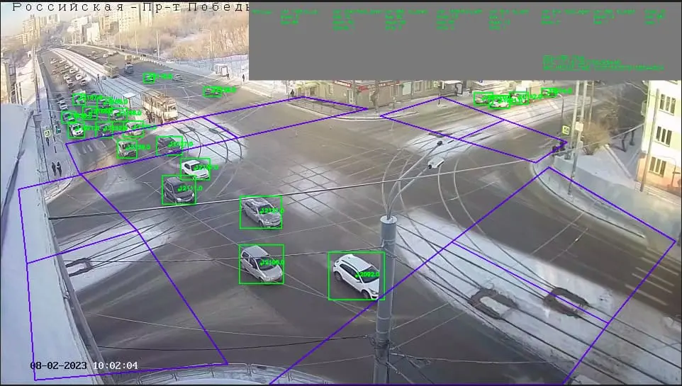

Есть ли жизнь после NVIDIA?
В 2023 году CV-инженеры провели НИР для того, чтобы найти альтернативные вычислительные устройства, с помощью которых мы надеемся решать задачи по распознаванию транспорта и пешеходов.
В 2023 году CV-инженеры провели НИР для того, чтобы найти альтернативные вычислительные устройства, с помощью которых мы надеемся решать задачи по распознаванию транспорта и пешеходов.
Наша команда разработала собственное цифровое решение для мониторинга транспортного потока, которое работает на одноплатном компьютере Nvidia Jetson. Однако санкции со стороны Запада внесли свои коррективы в будущее проекта: нам пришлось искать альтернативные варианты для бесперебойной работы системы.
Прежде, чем ответить на вопрос: «Есть ли жизнь после Nvidia?», хотелось бы немного рассказать о самих задачах и методах их решения.
В рамках создания интеллектуальной транспортной системы перед нами стояли следующие задачи:
Эти задачи можно решать различными методами, например, установить датчики движения или камеры видеонаблюдения. Однако наиболее приоритетным решением является установка камер, передающих видео на устройство с соответствующим программным обеспечением. Такая реализация позволяет не только подсчитывать количество транспорта, но и классифицировать его, а всего одна камера может охватывать весь перекресток. Применение датчиков требует установки оборудования на каждую полосу перекрестка, что увеличивает стоимость системы, а также трудоёмкость монтажа.
Таким образом, эти задачи становятся задачами компьютерного зрения. Один из методов решения таких задач заключается в использовании детектора и трекера объектов.
Детектор объектов ‒ это алгоритм, который позволяет находить объекты на изображении. Например, на изображении с камеры можно обнаружить транспортные средства (ТС), вычислить их положение в кадре, а также классифицировать их (легковое авто, грузовое, автобус и т.д.).
Трекер объектов представляет собой алгоритм, позволяющий отслеживать перемещение объекта на последующих кадрах видео. То есть, данный алгоритм позволяет присвоить идентификатор каждому объекту в кадре и указать, где находится тот же объект на следующем кадре.
Сначала детектор объектов используется для нахождения всех ТС в кадре. Затем трекер объектов используется для отслеживания перемещения каждого обнаруженного ТС. Когда ТС покидает область перекрестка, оно считается учтенным, и данные о количестве выехавших ТС обновляются.
Перед тем как перейти к исследованию аналогов одноплатника, нам нужно рассмотреть те алгоритмы, которые необходимы для решения задач и соотнести с тем, что предлагает рынок. Довольно подробно мы отразили эту часть вопроса в статье на Хабр «Расчет транспортного потока на основе YOLOv5 и DeepSORT на базе Deepstream».
И вместе с тем, мы все же рассмотрим решения, которые применяли в работе с Nvidia Jetson. После этого станет понятно, почему заменить Nvidia довольно сложно.
Существует большое количество алгоритмов, способных решать задачу детекции.

Из существующих алгоритмов, YOLOv5 является наиболее подходящим по следующим причинам:
Существуют и более новые версии YOLO с новым набором функций, например, YOLOv6 и YOLOv8. YOLOv8, дополнительно позволяет выполнять еще и сегментацию объектов. Однако данная версия не имеет плюсов, описанных во 2 и 3 пунктах.
Трекинг в первую очередь нацелен на присвоение уникального идентификатора каждому объекту. Это позволяет соотнести один и тот же объект между кадрами. Для этого используются данные детектора объектов и специально разработанный алгоритм, позволяющий отслеживать объекты в кадре по мере их перемещения. При помощи присвоения идентификатора (ID) каждому объекту становится возможным вести подсчёт уникальных объектов на видео.
Так же, как и в случае с детекторами, существует большое количество решений. Несмотря на это, всё же наиболее оптимальным представляется DeepSORT по ниже указанным причинам.

Таким образом, реализация описанного решения включает в себя 4 основных шага:
Из выше сказанного можно видеть, что для анализа дорожного трафика используются нейросетевые алгоритмы. Несмотря на высокую эффективность, они всё же имеют один существенный недостаток: требовательность к ресурсам. Для исполнения нейронных сетей нужно либо специальное оборудование и его поддержка, либо максимально эффективное использование существующего. Для ИТС наиболее актуально встраиваемое (embedded) железо. Такое оборудование позволяет на месте собирать статистику с исследуемых участков дороги. Однако это усложняет задачу, так как данное оборудование имеет ограниченные вычислительные мощности по сравнению с их северными аналогами.
Крупные производители обычно предлагают много различных аппаратных продуктов, но все они программируются в рамках одного фреймворка. Это фреймворки с открытыми API, которые можно скачивать и использовать.
Как правило, они предоставляют возможность конвертировать нейросеть в нужный формат и использовать её максимально эффективно. Nvidia здесь не исключение, а скорее даже наоборот, некий эталон. Nvidia предоставляет следующие продукты для ускорения вычислений.
CUDA ‒ платформа параллельных вычислений от Nvidia, которая позволяет использовать графические процессоры для ускорения вычислений.
TensorRT – это оптимизированный для работы с глубокими нейронными сетями фреймворк от Nvidia, который позволяет ускорить работу нейросетей за счет оптимизации их архитектуры и вычислений. Использование этих технологий позволяет значительно ускорить обработку видео и анализ данных в реальном времени.
Jetson – это серия встраиваемых вычислительных платформ от Nvidia, предназначенных для работы с искусственным интеллектом и машинным обучением. Они оснащены мощными процессорами и графическими ускорителями, которые позволяют обрабатывать данные в реальном времени и выполнять сложные вычисления. Самый дешёвый из них ‒ Jetson Nano. Он содержит маломощный процессор с архитектурой ARM (4 ядра на 1.5 ГГц), а также видеокарту с 128 ядрами.
Nvidia даже предоставляет SDK, который включает в себя мощь CUDA и TensorRT, и который оптимизирован для работы на Jetson – Deepstream.

Вычислительные процессоры NVidia: Jetson Nano и Jetson TX2
Безусловно, Jetson является лидером среди конкурентов, так как сопровождается понятной и полной документацией с большим количеством примеров. Однако санкции со стороны компании Nvidia в отношении РФ затрудняют покупку продукции.
До проведения НИР мы рассмотрели аналоги одноплатного компьютера Nvidia Jetson.
Российских аналогов, сопоставимых по возможностям, к сожалению, на момент исследования не существует,но есть несколько производителей из Китая, продукцию которых купить возможно.
Первый из них ‒ это Rockchip.

Характеристики Rockchip
Rockchip RK-3588S-PC — это одноплатный компьютер, оснащенный 4-х ядерным процессором Cortex-A76 @ до 2.4 ГГц, 4-х ядерным видеопроцессором Arm Mali-G610 MP4 с поддержкой OpenGL ES3.2 / OpenCL 2.2 / Vulkan1.1, 6 TOPS NPU и декодирование видео 8Kp60 H.265 / VP9 / AVS2, 4Kp60 AV1 и кодирование видео 8Kp30 H.265/H.264.
На выбор по оперативной памяти представлены конфигурации на 4 Гб, 8 Гб, 16 Гб или 32 Гб LPDDR4 / LPDDR4x / LPDDR5.
Для проведения НИР мы остановили внимание на этом варианте. Решение выбрать именно Rockchip было принято по нескольким причинам:
В ходе изучения данного устройства выявили следующие недостатки:
❌ Скудная документация (большая ее часть на китайском).
❌ Малое количество примеров в официальных репозиториях и часть из них не работают.
❌ Слабая поддержка пользователей.
❌ Проблема с конвертацией собственных моделей под NPU Rockchip.
Вообще существует целый класс подобных Raspberry образных устройств с NPU, например, Orange Pi. Большинство из них обладают схожим с Rockchip нейропроцессором.
Такие устройства зачастую имеют 2 дистрибутива операционных систем, которые предоставляет производитель. Первый это стандартный GNU/Linux, обычно Debian. Второй ‒ это своя версия андроида. Из-под андроида в теории можно использовать Tensorflow lite. Он может исполнять нейронные сети как и на обычном GPU устройства, так и на возможных сопроцессорах, если производитель соблюдает некий набор стандартов.
В целом Rockchip оставил скорее позитивный опыт использования. Неплохо подходит для несложных задач детекции и трекинга объекта, в рамках быстрого разворачивания проекта может конкурировать в них с Jetson Nano.
Периферийная ИИ-станция Huawei Atlas 500 также предназначена для использования на границе вычислительных систем для анализа больших данных. Устройство выполнено в компактном корпусе и характеризуется исключительной плотностью размещения вычислительных ресурсов. Основное назначение станции — интеллектуальные системы типа «умный город», автоматизация производственных процессов.
Atlas обладает мощным NPU модулем, который делает inference модели YOLOv5s за 2.2 миллисекунды. Таблица с характеристиками здесь. Среди достоинств ‒ очень мощный NPU, который поставляется сразу в промышленном корпусе.
В ходе исследования столкнулись с теми же проблемами, что и у Rockchip ‒ плохая документация, языковой барьер и малое количество примеров работы с моделями. Также столкнулись еще с одним существенным недостатком в виде слабого CPU, который не позволяет производить подготовку данных перед обработкой моделью стандартными средствами. Предоставляемая библиотека ACL в теории должна брать эти задачи на себя. Однако ее документация также страдает, а большая часть примеров не запускается.
В наших глазах это некая тёмная лошадка. имеют несколько edge устройств, которые, судя по характеристикам, конкурируют c Jetson Nano и TX2 (краткая таблица со сравнением устройств ниже).
Так же, как и Атлас, устройства поставляются сразу в промышленном корпусе. Вместе с устройствами подставляется специальный SDK.
BMNNSDK (BITMAIN Neural Network SDK) предоставляет ряд программных инструментов, включая базовую среду драйверов, компилятор и инструмент inference.
Данное устройство еще находится на стадии изучения. На первый взгляд с документацией уже лучше, чем у двух предыдущих кандидатов. На официальном сайте даже имеется целый онлайн-курс по разработке под эти устройства. Однако, большая часть информации всё так же на китайском.
Сравнение edge устройств Sophon
Изначально Rockchip приобретался для того, чтобы попробовать заменить Nvidia Jetson, который используется сейчас для решения следующих задач:
Делимся результатами тестирования алгоритмов на базе Rockchip.
Стандартный формат YOLOv5 (PyTorch) создан для того, чтобы inference модели можно было производить на основе фреймворка PyTorch.
Фреймворк способен производить операцию inference с использованием видеокарты Nvidia или же с использованием CPU (библиотеки есть как для архитектуры x86, так и для arm). Данный формат можно также запустить на Rockchip, однако inference будет производиться только с использованием CPU, что не имеет смысла, так как будет выполняться слишком долго из-за его малой мощности. Поэтому для запуска inference с использованием NPU на базе Rockchip существует rknn-toolkit, использующий формат модели ‘.rknn’. Таким образом, конвертация позволяет перенести вычисления на NPU (нейросетевой процессор).
В официальных примерах от Rockchip есть реализация детектора YOLO с примером модели YOLOv5s, после конвертации модели из её стандартного формата “.pt” (формат модели, используемый фреймворком PyTorch) в формат, используемый на Rockchip “.rknn”, YOLO снимает детекции с кадра и отдает позиции, название объекта и точность определения.
При конвертации возникли трудности, связанные с малым количеством информации в документации со стороны производителя Rockchip. Изначально не было понимания, где должен запускаться этот пример и что нужно для его корректной работы. Решением стала установка Python библиотеки rknn-toolkit2 из официального репозитория на ноутбук и запуск проекта на этом ноутбуке.
После конвертации YOLO-модели в формат моделей Rockchip — “.rknn” было принято решение запустить эту модель на самом Rockchip. Для этого пришлось установить на него rknn-toolkit2-lite, так как rknn-toolkit2, как оказалось, предназначался только для работы вне Rockchip RK3588S-PC.
После установки и небольшой доработки примера по конвертации (изменение rknn на rknn-lite) получилось запустить стандартный inference модели YOLOv5s на самом Rockchip. И уже после этого получилось создать полноценный детектор объектов.
Для того, чтобы разобраться с тем, как конвертировать custom модель YOLOv5 (обученную на основе других классов) под Rockchip, ушло довольно много времени, так как по документации было много вопросов, с которыми пришлось разбираться самостоятельно. В итоге был разработан алгоритм конвертации для YOLOv5-моделей любых версий в .rknn формат.
Для начала необходимо конвертировать YOLO-модель из формата “.pt” в общий формат моделей “.onnx”.
После этого уже можно конвертировать полученную модель формата “.onnx” в формат, с которым может работать Rockchip, используя нейропроцессор — “.rknn”.
Подробная инструкция по конвертации описана ниже.
Изменить файл test.py. Указать названия ваших входных и выходных моделей:
10:ONNX_MODEL = ‘yolov5s.onnx’
11:RKNN_MODEL = ‘yolov5s.rknn’
Изменить CLASSES (список классов) для используемой модели.
В качестве оптического трекера был проверен алгоритм centroid трекера объектов. Он основывается на координатах рамки, внутри которой находится объект. Эти координаты он получает от модели YOLOv5s. По координатам рамки он находит центральное положение, запоминает его и присваивает объекту уникальный id. Затем вычисляется Евклидово расстояние между созданными объектами и объектами на следующем кадре и исходя из этого определяется, куда переместился объект. На данный момент оптический трекер работает на скорости около 13 кадров в секунду.
Плюсы оптического трекера
Оптический трекер нетребователен к мощности, сравнительно с остальными трекерами. Следовательно, скорость обработки изображений значительно выше, чем у других трекеров.
Минусы оптического трекера
Хоть оптический трекер и работает быстро, его точность довольно низкая по сравнению с аналогами. На тестах он показывал лишние объекты, часто терял объекты, или вообще перекидывал трек с одного объекта на другой.
SORT трекер подразумевает алгоритмический подход к отслеживанию объектов при помощи детекции. SORT игнорирует прочие элементы за пределами детектируемого объекта. Он также использует местоположение и размер рамки, полученной от YOLO как для оценки движения, так и для сопоставления данных по кадрам.
Сначала он показывал скорость обработки около 5 кадров в секунду. Оптимизация SORT трекера прошла успешно, средняя производительность стала держаться в промежутке от 12 до 27 кадров в секунду. Оптимизация была сделана через разделение на потоки получения кадров, inference на нейропроцессоре и работы SORT трекера с отрисовкой изображений.
Плюсы SORT трекера
Плюсом этого трекера является точность. Он уже не перебрасывает id объектов между собой. В предыдущем пункте (у оптического трекера) была проблема с уникальными номерами для каждого объекта, они путались между этими объектами, как раз «перебрасывались», в этом тесте от проблемы уже получилось избавиться.
Минусы SORT трекера
Для его работы нужна бóльшая мощность, по сравнению с оптическим трекером. Также иногда он теряет объекты из-за различных перекрытий на видео.
Алгоритм DeepSORT объединяет алгоритм SORT и алгоритм ReIdentification (Deep).
ReIdentification алгоритм – это алгоритм, который запоминает внешние признаки того или иного объекта, в результате чего может сопоставить объект на двух разных кадрах за счёт его визуальных признаков. DeepSORT в качестве ReIdentification модели использует архитектуру ResNet. Изначально ResNet нацелен на классификацию изображений, но так как архитектура способна извлекать уникальные признаки из изображения она находит применение в других областях.
Авторы DeepSORT изменили архитектуру ResNet так, что убрали из нее слой, отвечающий за определение класса изображения. Поэтому алгоритм использует нейронную сеть, которая выдает вектор признаков, он сравнивается с векторами признаков на других кадрах. При схожести данных признаков делается вывод, что объект один и тот же. Помимо этого существуют реализации с использованием архитектуры MobileNetV2.
Для адаптации под Rockchip была выбрана модель «mobilenetv2_bottleneck_wts.pt» из репозитория «https://github.com/levan92/deep_sort_realtime ». Для конвертации модели в формат Rockchip было необходимо сначала привести модель формата PyTorch в формат onnx. После этого можно уже можно было конвертировать модель в формат rknn, немного видоизменив пример конвертации YOLO.
Данный алгоритм позволяет не терять объект при перекрытии его другим каким-либо объектом или временном исчезновении из кадра. Алгоритм SORT такими свойствами не обладает.
Авторам DeepSORT обучена ResNet на базе 1,100,000 картинок с более 1000 разных людей. Поэтому DeepSORT способен лучше работать с людьми, однако применим он для совершенно разных объектов. Если же есть цель добиться максимальной производительности, то советуется обучить нейронную сеть на базе фотографий целевых объектов.
Плюсы DeepSORT трекера
Точность его работы в разы выше, чем у SORT трекера. Правильно настроенный DeepSORT трекер гораздо реже теряет объекты в кадре.
Минусы DeepSORT трекера
Было потрачено достаточно много времени на адаптацию проекта DeepSORT под Rockchip, также на данный момент скорость работы DeepSORTt трекера недостаточно высока для трекинга объектов в режиме реального времени.
Работа DeepSORT трекера ‒ очень ресурсоемкая операция, как для NPU устройства (для выполнения inference нейронной сети), так и для CPU (расчет вектора признаков и работа с каждым треком), поэтому для добавления новых возможностей в проект, например, определения номеров транспортных средств, придется поработать над оптимизацией трекера, так как он может нагружать процессор до 70-ти процентов.
Решение этой задачи на данный момент невозможно на Rockchip, так как в примерах Rockchip не получилось найти пример по конвертации моделей, которые распознают текст на изображении.
За время работы с Rockchip нами были предприняты попытки использовать разные типы оптимизации.

Данный эксперимент повысил точность треков. Погрешность от эталонных значений в данном тесте около 10%, но это только на трекинг автомобилей, с остальными объектами точность крайне низкая, около 10% от эталонного значения.
Оптимизация работы DeepSORT. Для начала было необходимо переписать DeepSORT под работу с RknnToolkit. Это получилось сделать благодаря изменению файла «deep_sort_realtime/deep_sort_realtime/embedder/embedder_pytorch.py», но этого оказалось недостаточно, скорость работы трекера составила около 1-2 кадров в секунду. Для большего ускорения работы DeepSORT трекера была предпринята попытка сделать обработку изображений методом батчевания, по 20 изображений за раз. Это ускорило работу трекера до 4-5 кадров в секунду. После решения проблемы с долгим inference появилась другая проблема. На математические операции для сравнения полученных векторов на основе inference модели в DeepSORT трекере могло уходить по секунде на один кадр. Пока не получилось придумать оптимального решения для этой проблемы, но небольшой прирост в скорости (до 6-7 кадров в секунду) удалось получить благодаря распараллеливанию математических вычислений внутри DeepSORT трекера.
Основными перспективами развития исследований для одноплатного компьютера Rockchip RK3588-S-PC являются следующие направления:
Действительно, существуют устройства, которые могут быть альтернативой продуктам Nvidia. Устройства и их SDK сложны в освоении во многом из-за проблем с документацией.
Изучаемые устройства требуют высокую квалификацию разработчика для развертывания собственных моделей, а также любого другого использования вычислительных мощностей (OpenCL, Vulkan, RKNN Toolkit, нативные кодеки).
Сравнение Rockchip и Jetson
На данный момент Rockchip RK3588S может быть использован для решения задач, где нужен только “Object detection”, при помощи SORT трекера, DeepSORT трекер сейчас работает на скорости 6-7 кадров в секунду, этого недостаточно для трекинга в режиме реального времени.
Мы продолжаем рассматривать и другие вычислительные устройства, и их документацию, в частности, но это уже совсем другая история, которую мы расскажем в следующий раз.
Свяжитесь с нами по почте request@codeinside.ru и мы поможем вам реализовать проект. Ознакомиться с другими выполненными проектами по ссылке.
Решаем задачи бизнеса с помощью компьютерного зрения и машинного обучения
Проведение экспериментов для определения технического потенциала идей заказчика.

Создаем рабочие модели или прототипы умных устройств для вашего бизнеса
Заполните форму,
и мы свяжемся с вами
в ближайшее время